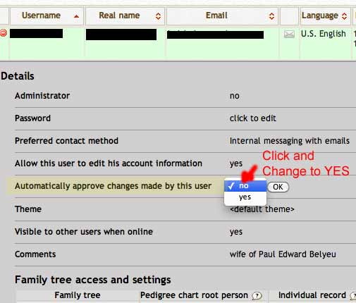

Accept / Reject Changes
An important part of the collaborative process encouraged by webtrees' design is the submission of information by online users with an edit or higher role. By default, all modifications and additions must be accepted (approved) before they appear within the database. Several of the user roles have the ability to review and approve (accept) or reject (decline) changes. SEE: Access_and_Privacy#User_level_access. Those assigned with that responsibility will see a "pending changes" notice, usually in the footer, but located in different places depending upon the theme used. Clicking on the notice will provide a pop-up window which specifies all the pending changes, allows the review of each, allows the reviewer to view the raw data to make changes, and allows the reviewer to approve or reject the changes. NOTE: This process is not yet perfected and it is not recommended to accept only portions of changes as it may create bad links.
If an administrator or manager desires to allow editors (or above) to have the changes they make automatically approved, this setting can be set within the User administration area. Find the user you wish to modify (use the filter for quickly locating known persons), click on the green circle with the plus sign at the far left, opening the user "details" by expanding user settings fields.
{kind=link}
You can then locate the line "Automatically approve changes made by this user". Click on the "No" displayed (default setting) and change it to "Yes" and click "OK".

{kind=link}
Now, any changes made by this user will be automatically accepted into the database and the reviewers will not know of the changes except by reviewing the "Recent changes" block, if this block has been activated on either the main page, the portal page or both.
We strongly encourage administrators to use this "automatically approve changes" tool sparingly. It is imperative that every user's ability to enter information that meets the GEDCOM standards, your site standards, and your site conventions, be tested prior to activating the auto-approve function. Making changes to pending changes and additions is much easier during the review process, which allows you to note the types of errors users are making and advise them via email for training purposes, than it is to make the corrections later. One small wrong place can multiply quickly since autocompletion in many fields will suggest this wrong choice to any other editing user and cause it to proliferate. HINT: Most of us tend to set this special "auto-approve" function to "Yes" only for ourselves.